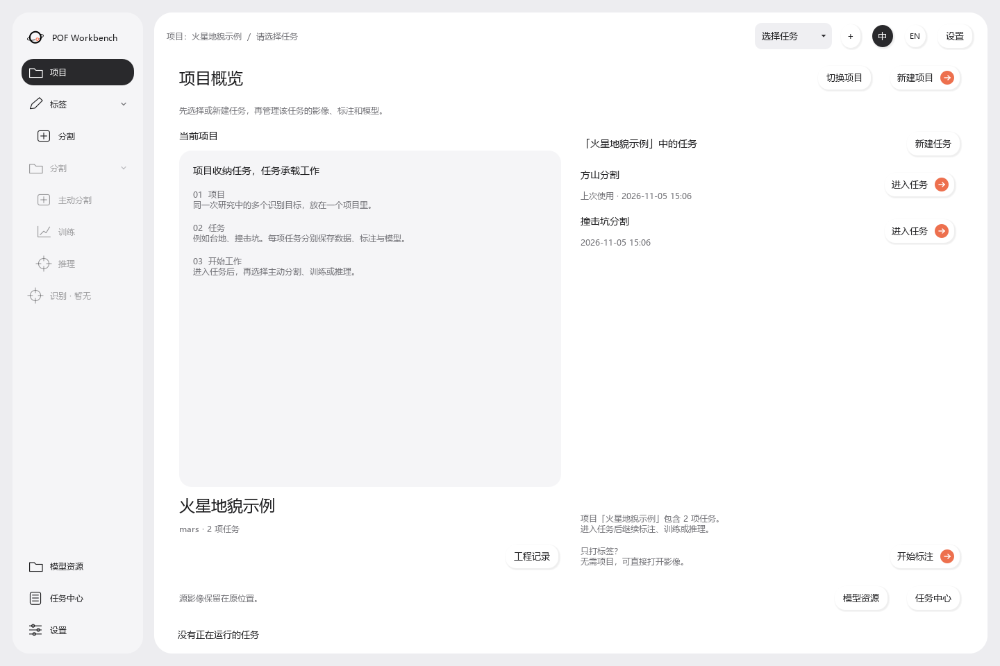
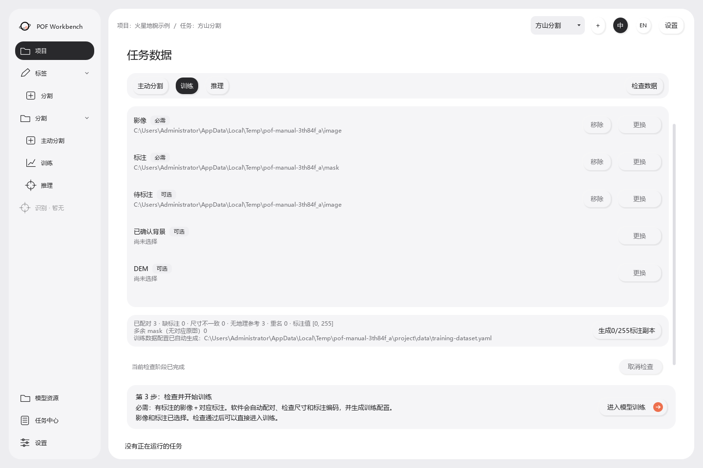
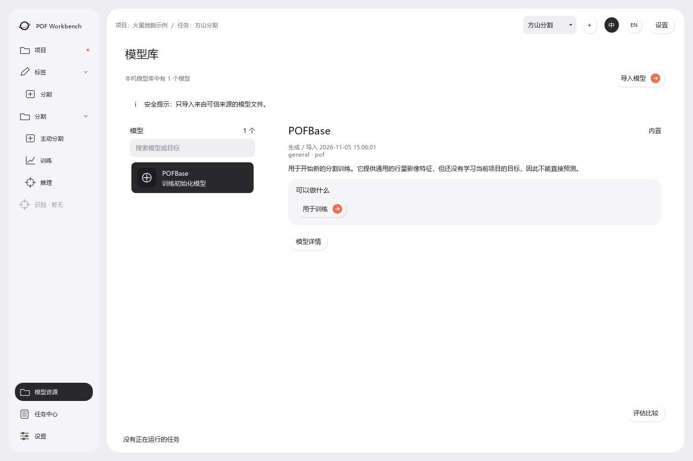
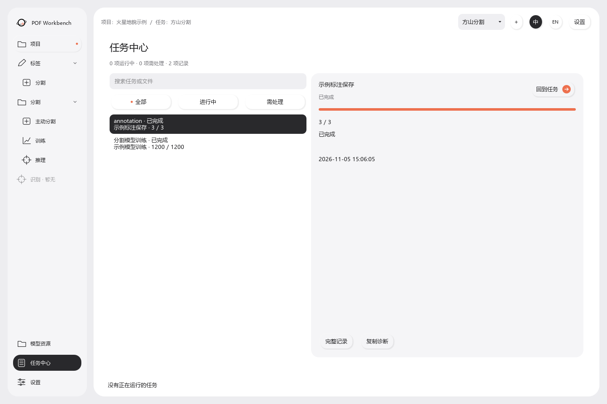
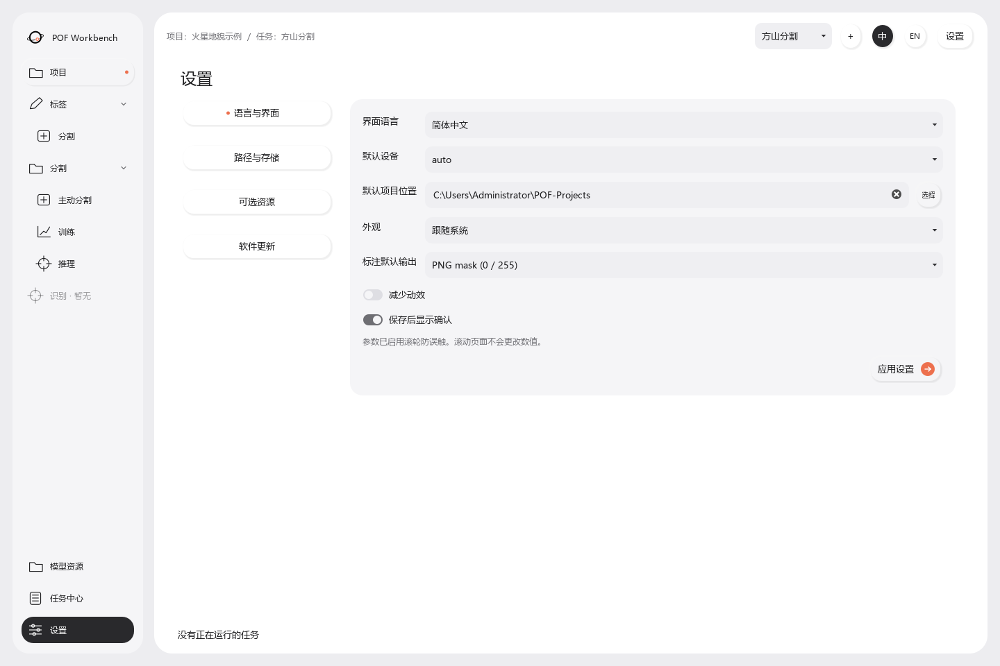
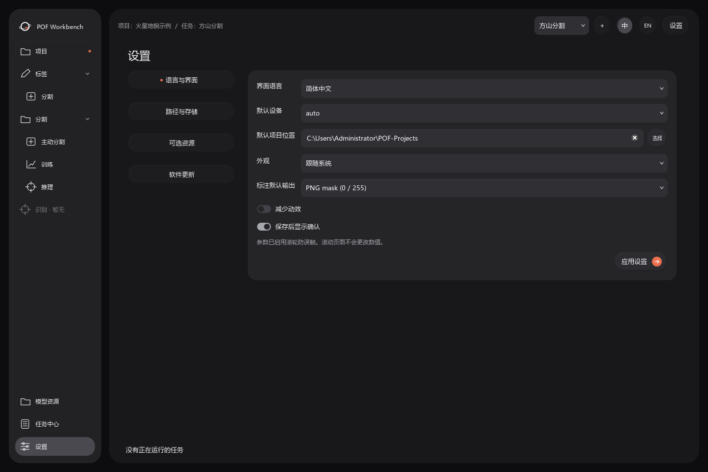
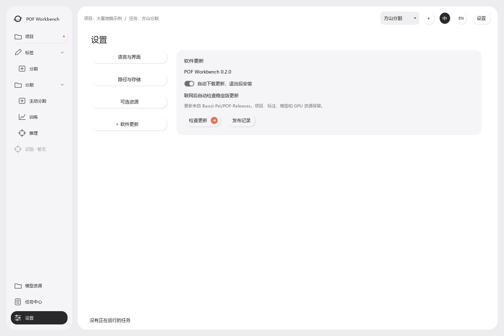

南方科技大学行星与人工智能实验室
POF Workbench 使用手册
影像标注、分割训练与批量推理操作指南
POF Workbench 由南方科技大学行星与人工智能实验室开发，用于遥感影像的人工标注、主动学习、模型训练和批量推理。手册面向科研人员和数据处理人员，按实际工作顺序说明软件界面、数据组织、模型流程和结果检查方法。
目录
目录按模块组织。每章既可以顺序阅读，也可以按当前操作单独查阅。
1. 软件概述与工作流程
POF Workbench 以项目组织研究工作，以任务隔离不同目标的数据、标签和模型。独立标注可在不创建项目的情况下运行；训练、主动学习和推理在具体任务中衔接。
1.1 术语说明
| 名称 | 含义 | 示例 |
|---|---|---|
| 项目（Project） | 一项研究工作的总文件夹，下面可以有多个任务 | 某个火星区域的地貌研究 |
| 任务（Task） | 这次要识别的目标，独立保存数据、模型和轮次 | 方山分割、撞击坑分割 |
| 影像（Image） | 要观察和处理的原图 | TIFF、PNG、JPEG |
| 标签／mask | 和原图一样宽、一样高的目标分布图 | 白色是目标，黑色是背景 |
| 训练（Training） | 用影像和人工标签教模型识别目标 | 让模型学习方山的形状和纹理 |
| 推理／预测（Inference） | 用已经训练好的模型处理新影像 | 自动生成新影像的 mask |
| 主动学习（Active learning） | 模型推荐区域，人来审核，再用新标签更新模型 | 多轮补标难识别的方山 |
| 验证集／测试集 | 用来检查模型效果的数据 | 验证集选模型，测试集检查最终效果 |
当前软件主要做二值分割：一个任务识别一种目标，回答每个像素“是不是这类目标”。它不是给每个目标自动分配独立编号的实例标注工具。
1.2 操作入口与适用条件
| 数据条件 | 功能入口 | 输出结果 |
|---|---|---|
| 只有图片，想人工打标签 | 工作台 → 独立标注／标签 → 分割 | 同名 PNG mask |
| 影像和对应标签 | 项目与数据 → 训练 | 可用于推理的模型 |
| 很多未标注影像，标签很少或没有 | 项目与数据 → 主动分割 | 逐轮增加的标签和改进模型 |
| 已有完整分割模型 | 分割 → 推理 | mask、预览和可用的 GIS 产品 |
注意两个区别：
- POFBase 是训练起点，不是已经会识别你研究目标的成品模型。
- 独立标注不需要创建项目；训练和主动学习建议放进项目的具体任务中，方便管理和复用结果。
1.3 工作流程
创建项目 → 选择任务 → 准备数据
├─ 有标签：检查数据 → 训练 → 推理
└─ 无标签：推荐区域 → 人工标注 → 训练 → 再推荐
不需要一次做完全部流程。你可以先画标签，之后再导入训练；也可以先推理，再打开生成的 PNG mask 进行人工修正。
2. 安装、启动与首次配置
2.1 安装版与便携版
安装版：运行安装程序，选择语言和安装位置，按页面提示完成。建议安装路径简短，例如 D:\Apps\POF。
便携版：将 ZIP 完整解压到一个文件夹，再启动里面的 POF Workbench.exe。不要只把 EXE 拖到桌面运行，也不要在压缩包中直接双击。程序旁的工作进程和 _internal 等文件需要一起保留。
安装包与软件首次使用默认采用英文。切换到中文后会记住选择，后续打开继续使用上次的语言。
2.2 首次启动与配置
- 等待小型启动窗口完成载入，进入工作台。
- 如需中文，点击界面右上角的“中”；切回英文点击“EN”。
- 到“设置 → 语言与界面”检查默认项目保存位置。外观默认跟随系统，也可手动选择浅色或深色。
- 如果暂时只打标签，可以直接开始，无需下载 GPU 库和 MarsScope。
- 如果要训练或推理，按需要到“设置 → 可选资源”配置 GPU 环境。
GPU 库用于加速训练和推理；MarsScope 用于辅助主动学习的候选搜索。二者作用不同，不需要为了打开软件就全部下载。
2.3 界面结构
| 位置 | 用途 |
|---|---|
| 左侧“项目” | 创建、进入和管理项目，查看任务及数据 |
| 左侧“标签 → 分割” | 不依赖模型的独立标注 |
| 左侧“分割”分组 | 主动分割、模型训练、推理 |
| 左侧“模型资源” | 查看模型能力、指标，导入和导出 |
| 左侧“任务中心” | 跟踪运行任务、查看失败和历史 |
| 左侧“设置” | 语言、外观、设备、存储、可选资源和软件更新 |
| 顶部项目／任务信息 | 核对当前正在操作的工作范围 |
一级分组可折叠。当前页会有选中状态，所在上级分组可能显示小橙点。“识别／暂无”是预留入口，目前不作为可用流程介绍。
尚未进入具体任务时，分割分组及主动分割、训练、推理入口会禁用；先从项目中选择任务。独立标注、模型资源和设置仍可进入。“识别／暂无”保持不可用。
进入任务后，点击左侧“项目”会返回当前任务的“项目与数据”，保留当前任务及标注状态；不会退出任务或自动切换到其他任务。要查看项目下的其他任务，使用“项目中的任务”；要更换项目，使用“切换项目”。
2.4 操作反馈与运行状态
短操作会通过按钮状态或底部文字反馈；耗时操作会显示阶段、进度、已用时间及可用的取消入口。总量未确定时，进度可能是活动指示，并不代表准确百分比。
按钮变灰时先看旁边的原因提示：常见原因是没有进入任务、数据尚未检查、没有模型、正在保存或已有任务运行。

3. 项目与任务：创建、进入、切换和退出
3.1 创建项目
- 在工作台点击“新建项目／New project”。
- 填写项目名称和保存位置。
- 填写识别目标（任务），例如“方山”或“撞击坑”。
- 选择对应行星；火星数据可按需要启用 MarsScope。
- 确认后创建，进入项目并按引导选择任务或准备数据。
项目名称用来区分研究工作，任务名称用来区分要识别的目标。不必再写一段项目说明。若名称冲突，先改名或打开已有项目。
推荐组织方式：一个区域研究建一个项目，不同目标各建一个任务。同一种目标的多轮改进通常继续使用原任务，便于追踪模型和标注。
3.2 一个项目下创建多个任务
在工作台的“工程里的任务”或项目页点击“新建任务”，填写识别目标，并选择开始方式：主动分割、训练或推理。
例如：
项目：火星北部地貌
任务：方山 → 自己的数据、标签、模型、主动学习轮次
任务：撞击坑 → 另一套数据、标签、模型和轮次
不同任务不会因为位于同一个项目中，就自动共用标签或采用彼此的模型。
3.3 进入、切换与退出
- 打开／切换项目：先打开项目，再从任务列表选择要继续的任务。打开项目不等于自动进入第一个任务。
- 切换任务：使用顶部任务选择入口，核对页面顶部的“项目／任务”后再操作。
- 退出项目：返回没有活动项目的工作台，之后可以继续原项目或打开其他项目。
- 编辑信息：在项目页使用“编辑工程信息／编辑任务”。项目原始保存位置不通过改名称自动搬家。
正在训练、检查数据、保存标注或推理时，更换数据和切换工作范围可能受到限制。按软件提示先安全停止或等待完成，避免界面状态和任务实际数据不一致。
3.4 缩略图与数据位置
有标签的项目可以从已标注目标区域自动生成展示缩略图。没有标签时，不应把一张示意图当成该项目的真实成果。
添加影像目录一般是登记原位置，并非把整个目录复制进项目。删除项目内的路径引用，也不等于删除原图；后续移动原始目录会影响再次读取。

4. 项目与数据：导入、配对和标签规范化
4.1 数据类别与导入位置
| 数据项 | 应放入什么 | 是否必须 |
|---|---|---|
| 影像 | 已有标签对应的原图，或需要预测的输入影像 | 训练、推理需要 |
| 标注 | 与原图同名、同尺寸的 mask，或可与原图对齐的 SHP 面标签 | 常规监督训练需要 |
| 待标注 | 尚未完成标签、准备进入主动学习的影像目录 | 开始新的主动学习需要 |
| 已确认背景 | 人工确认整张完全没有本任务目标的影像 | 可选 |
| DEM | 与影像区域对应的高程栅格 | 可选 |
没有 mask 的图片不自动等于背景。如果你还没检查过它，放到待标注目录，不要用“已确认背景”绕过缺标注检查。
4.2 命名与配对规则
最容易配对的方式是文件主名一致，只改变扩展名：
image/ mask/
MESA_001.tif MESA_001.png
MESA_002.tif MESA_002.png
标签可采用二值 PNG／TIFF mask，也可采用 SHP 面标签。SHP 示例：MESA_001.tif 对应 MESA_001.shp，同时保留 .shx、.dbf 及坐标系文件。
每张 mask 的宽和高必须与对应原图一致。PNG 不需要保留 TIFF 的地理投影，但像素位置必须一一对应。不要为了让两者“尺寸一致”而随意拉伸标签。
目录中尽量避免同名的不同影像，例如同一层级的 A.tif 与 A.jpg，否则同名 PNG 可能无法明确对应哪张原图。
4.3 检查数据
选择数据后点击“检查数据／Check data”。软件会建立文件清单、配对原图和标签，再检查尺寸和标签编码。
标签目录可以混用 mask 与 SHP。同一原图同时有两种标签时，按“设置 → 标注默认输出”的当前格式优先选择；只有一种时使用现有标签。SHP 会按原图的坐标和像素大小转换成训练用 mask，保存在任务 data/shp_masks 下，原 SHP 保留。检查结果列出所选标签和备选数量，不会把两套标签叠加。同一种格式在不同子目录里有重名仍需处理，以免选错影像。
修改默认输出格式后，需要重新检查数据；正在运行的任务需结束后再切换格式。独立标注保存到当前任务关联的标签目录后，也会要求重新检查，使下一次训练使用最新标签。
查看结果中的“已配对、缺标注、尺寸不一致、重名、多余 mask”等项目。当前流程可以跳过没有对应原图的额外 mask，继续使用有效配对；问题明细仍需保留查看。没有可用配对，或关键问题未解决时，仍无法启动训练。
目录很大或位于网络盘时，先统计总量可能需要等待。看阶段、已发现数量和最近文件，不要反复点击“检查”启动重复工作。需要取消时使用页面取消入口。
使用过程中改了文件夹内容怎么办？软件会在后台定期检查已关联目录的文件名、大小和修改时间，不会反复读取整张影像。发现变化后会显示提示，旧的数据检查结果失效：
- 新增文件：当前训练或推理保留原批次，不中途塞入新文件；任务结束后点击“重新检查数据”，再使用更新后的清单。
- 原文件被替换、删除，或网络目录断开：相关任务会请求安全停止，已保存的结果保留；恢复文件或连接后重新检查。
- 正在打标：保留当前画布和未保存修改。独立标注可用“刷新文件”重新扫描；刷新前需先保存或明确放弃当前修改。
- 标签被其他程序改过：独立标注保存时会提示冲突，保留当前修改，不直接覆盖外部文件。可以另选输出目录保存一份，再核对两份标签。
后台检测有间隔，并非每次文件操作都瞬间刷新。准备训练前仍应先完成文件复制，避免边复制边开始训练。
4.4 生成 0/255 标签副本
如果标签来自其他工具，可使用“生成 0/255 标注副本”规范化：
- 先选择原图和标签，完成检查。
- 点击生成副本，观察转换进度。
- 完成后核对输出目录及新的标签路径。
- 再检查数据，确认有效配对后进入训练。
副本通常位于当前任务工作目录的 data/converted_masks，已有目录时可能使用带序号的新目录。以完成提示中的路径为准。原始标签保留。
规范化会兼容常见的 0/1、0/255、灰度边缘、调色板和单色 RGB/RGBA mask。它不是把所有有颜色的图都变成正确标签：多类别标签需要明确目标类别，彩色截图和红绿轮廓预览不能直接当成 mask。

5. 独立标注：读入与保存 mask、SHP
5.1 功能入口
在工作台点击“独立标注／开始标注”，或从“标签 → 分割”进入。这个入口不要求创建项目，也不要求模型。
5.2 创建与保存标签
- 打开单张影像，或选择一个影像文件夹。
- 选择输出文件夹，建议与原图目录分开。
- 用多边形、画笔或套索圈出目标；标错的位置用橡皮或擦除工具修正。
- 按
Ctrl+S保存；需要连续处理时，点击“保存并下一张”。 - 等待“保存完成”及输出路径提示，再切换到下一张。
支持常见 TIFF、PNG、JPG/JPEG、BMP、WebP。支持一种扩展名不代表所有内部编码都能解码；影像损坏或特殊编码时按错误提示检查。
默认输出是原图尺寸的二值灰度 PNG：目标为 255（白色），背景为 0（黑色）。标注画面中的绿色只是可视化，不会原样写成绿色 PNG。
也可以导出 SHP 面标签。在“设置 → 语言与界面 → 标注默认输出”选择格式并应用；画布内“图层与工具 → 输出格式”也可以直接修改并记住选择。每次只输出所选格式，不默认保存两套。带地理参考的 TIFF 导出 SHP 时使用原图坐标系；普通图片导出的是像素坐标 SHP，保留一同生成的 .pof.json 才能可靠地重新对齐。移动 SHP 时应一起移动 .shp、.shx、.dbf、.prj（如果有）等配套文件。
5.3 载入与修改已有标签
- 打开原图或原图目录。
- 将输出文件夹设为已有标签所在位置。
- 软件会尝试载入同名 PNG、TIFF mask 或 SHP；核对原图、标签对齐和尺寸。也可以在“图层与工具 → 读入标签”手动选择文件。
- 修改后再次保存，按当前输出设置写入标签。读入 SHP 后可以保存为 PNG，反过来也可以。
同一个文件夹可以混用格式。例如 A.tif 对应 A.png，B.tif 对应 B.shp，软件分别识别。若一张原图有多套同名标签，优先当前输出格式，再查找其他格式；不会自动叠加。只有与所选格式一致、且未被外部更新的编辑记录才会恢复。文件监看会提示读入文件及未合并的重复标签。要主动合并两套标签，应先核对内容，不能把重复文件误认为不同目标。
SHP 读入的是全部面要素，均作为当前二值任务的目标；不按属性字段拆分类别。带地理坐标的 SHP 需要有效坐标系，软件会对齐到 TIFF；缺少坐标系或完全不重合时会提示，避免默默把标签放错位置。主动学习的“读取标签文件夹”也支持混合 mask/SHP，导入后仍按原有审核与提交流程生成训练用 mask。
例如，原图是 MESA_001.tif，对应输出是 MESA_001.png。批量目录一般保留相对的子文件夹结构。同主名的扩展名冲突时，软件可能生成带区分信息的文件名，请查看实际输出。
软件还可能在输出目录的 .pof-annotations 中保存编辑记录，便于恢复可编辑几何。交付训练用 mask 时可以只交付 PNG；要保留后续编辑能力，备份时也保留这些记录。
已有 PNG 是像素标签，不一定带有原来每个独立多边形的顶点。需要局部修正时直接画笔补画或擦除；不能假定外部 PNG 会还原成原工具中的全部矢量对象。
5.4 SHP 标签操作与格式选择
SHP 适用于需要保留面边界、使用 GIS 查看或与其他矢量数据叠加的场景。PNG mask 适用于逐像素监督训练与常规标签交换。二者描述的是同一任务的目标范围，保存格式由当前输出设置决定。
| 操作场景 | 操作方法 | 核对事项 |
|---|---|---|
| 自动读取同名 SHP | 打开原图，将输出目录指向 SHP 所在目录 | 原图和 SHP 主名一致，配套文件完整 |
| 手动读取标签 | 在“图层与工具”中选择“读入标签” | 对照目标位置，确认投影和边界正确 |
| 保存为 SHP | 将“标注默认输出”设为 SHP，按 Ctrl+S | 保存同组矢量文件，保留坐标信息 |
| 将 SHP 修正为 mask | 读入 SHP 后将输出设为 PNG mask，再保存 | PNG 保持原图像素尺寸 |
| 同名存在两种格式 | 在设置中确认默认输出格式，再重新读取／检查数据 | 按默认格式优先，不自动合并 |
坐标与配套文件。有投影的 TIFF 与 SHP 应覆盖同一地理区域。SHP 的 .shp 保存几何，.shx 保存索引，.dbf 保存属性；.prj 保存坐标系，.cpg 说明字符编码。复制或交付标签时应将同一主名的文件成组保留。普通图片没有地图坐标，软件输出像素坐标，并用 .pof.json 记录对齐信息；不要删除该文件后再将其作为地理坐标矢量使用。
类别与训练。当前二值任务将 SHP 中的面作为目标区域，不按属性字段自动选择多个类别。如果文件含多类地物，应先整理出当前任务需要的面。用于常规训练时，SHP 按原图栅格对齐后生成训练 mask；该缓存不会修改原始矢量标签。主动学习导入后仍需完成审核与提交。
5.5 画布与文件监看
主区域用于标注；左侧浮动工具栏用于切换工具。顶部小工具条提供缩放、全图、撤销和重做。右侧文件监看显示文件、保存状态和上一张／下一张入口。
监看窗收起后保留上一张／下一张、保存并下一张，以及当前序号和已保存／未保存状态；点击向下箭头的“展开”恢复完整内容。文件还在加载或保存时，部分操作会临时禁用。不要在保存未完成时直接断开网络盘或关闭进程。
文件监看的“标注图层”开关统一控制全部手工标签和模型预测的显示，快捷键为 H。关闭只是临时看原图，不删除标签、不改变保存或训练结果。主动学习默认保留自动预测作为可修改标签，不再提供一个会排除预测标签的独立开关；修改错误预测请用擦除或删除工具。
文件监看内也有“保存并下一张”：只有保存成功才会跳转。分段条中，每个格子对应一张图，保存过的为橙色、未保存的为灰色；悬停轻微放大并显示名称，点击可直接跳转，当前有未保存修改时仍会提醒。文件较少时铺成一行，文件很多时按组分页，末页按剩余数量收起多余行，不把多个文件合并成一个格子。TIFF 有有效地理参考时显示当前影像中心经纬度，并沿用原文件所属行星的坐标参考。
整图标注的含义
独立标注保存的是整张图：未涂成目标的区域最终为背景。因此用于监督训练时，应完成整张图的目标检查。只标了局部、其他区域还没看过的标签，不宜直接当作整图完整真值。

6. 标注工具：绘制、修改、擦除与快捷键
6.1 工具功能与适用场景
| 工具 | 操作 | 适合场景 |
|---|---|---|
| 选择／编辑 | 点击已有对象，拖动对象或可编辑顶点 | 调整多边形边界 |
| 目标多边形 | 逐点点击，双击或回车闭合 | 边界清楚的大目标 |
| 画笔 | 按住鼠标拖动连续涂画 | 补细节、细长目标 |
| 橡皮 | 按住鼠标拖动擦除目标像素 | 局部修正 |
| 目标套索 | 按住鼠标沿边界画圈，松开形成闭合区域 | 快速圈出不规则目标 |
| 多边形／套索擦除 | 先选对应形状，再切到“擦除” | 一次清掉较大误标区域 |
| 删除 | 选中可编辑对象，再点删除或按 Delete | 删除整块标注 |
| 未知区域 | 在主动学习中标出暂时无法确认的位置 | 遮挡、边界不清、无法判断 |
多边形和套索的“目标／擦除”是两种作用，不是两个可以同时生效的绘制工具。切换后先看当前选中状态再落笔。
擦除不等于删除原图。它只修改标签：把对应位置恢复为背景，通常不显示一块红色填充。背景擦除也不等于未知；未知表示训练时不应把该处强行当成背景。
6.2 调节画笔和橡皮
选择画笔或橡皮后，在左侧工具栏下方使用竖向滑槽调节大小。上下的加减按钮可以微调，也可以在数值框中直接输入像素直径。
笔触直径按原图像素计，屏幕上看起来多大还受当前缩放影响。先在局部放大检查，再决定是否加大笔触。快捷键 - 减小、= 增大。
6.3 缩放、平移和大图
- 鼠标滚轮缩放；按住空格并拖动平移。
- “全图／Fit”显示整张影像；“1:1”按原始比例显示。
- 修改细节时放大，检查整体漏标时缩小。
- 大量小标签的全图浏览会先显示缓存，再后台补细节。看到“正在更新标签”时，短暂等待清晰层完成。
显示层的缓存不改变保存精度。大 TIFF 的磁盘读取、网络盘延迟、首次解析标签和整图保存仍然可能耗时。
6.4 快捷键查看与自定义
鼠标悬停在工具上可以看名称与快捷键。按 F1 打开分组列表，左列是操作，右列可编辑按键；保存后两个标注入口共用。重复按键或占用保留的空格键会提示修改。
输入文件名、数值或文字时，快捷键会让位给输入框。感觉按键无效时，先点一下画布再试。
6.5 常用默认快捷键
| 功能 | 默认按键 | 功能 | 默认按键 |
|---|---|---|---|
| 选择／编辑 | V | 目标多边形 | P |
| 多边形擦除 | B | 画笔 | R |
| 橡皮 | E | 目标套索 | L |
| 套索擦除 | Shift+L | 未知区域（主动学习） | U |
| 撤销 | Ctrl+Z | 重做 | Ctrl+Shift+Z / Ctrl+Y |
| 删除选中标注 | Delete / Backspace | 闭合多边形 | Enter / 双击 |
| 取消当前绘制 | Esc | 保存标注／草稿 | Ctrl+S |
| 全图显示 | F | 原始比例 | 1 |
| 显示／隐藏全部标注 | H | 快捷键设置 | F1 |
| 减小笔触 | - | 增大笔触 | = |
| 上一张／下一张（独立标注） | A / D | 上一区域／下一区域（主动学习） | [ / ] |
| 打开影像（独立标注） | Ctrl+O | 快捷键设置 | F1 |
自定义后以悬停提示和快捷键窗口为准。
6.6 主动学习中的橙色虚线框
橙色虚线框表示本次需要完整审核的范围，绿色目标轮廓表示标签，两者不是同一个东西。
首轮可在允许编辑范围的状态下拖动框内移动，或拖动边角改变大小。范围可以覆盖整幅影像。确认范围后，认真检查框内全部目标；只把少数目标画出来就提交，会把框内剩余未标区域当作背景。
框外原图是上下文，用来帮助判断地貌；它不代表框外全部参与本次标注。框外没看过的位置应保持未知。固定验证／测试区域或特定会话状态可能限制改框，避免评估条件变化。
如果只看见框内小图，检查“图层与工具”中的原图上下文显示。若原始文件本身就是切片，软件无法显示切片之外不存在的原图。
7. 主动分割：从少量标注逐轮改进
7.1 启动条件
开始新的主动学习需要：已进入具体任务、设置了一个可用的待标注影像目录、扫描发现可用影像，以及可用的训练起点或兼容任务模型。
当前新轮次入口要求一个待标注目录。多处影像可先整理到同一个上级目录的子文件夹中。没有待标注数据时，不应从已标注训练目录自动假装生成新的未标注池。
如果已有会话，页面可能显示历史进展或恢复入口；这不代表可以在没有新数据时无限产生新的推荐。
7.2 初始化方式
没有成品模型：从 POFBase 开始。先选候选区域、人工标注，再完成首次任务训练。这里“从头开始”指没有本任务成品模型，不是所有网络参数都随机初始化。
已有同目标模型：选择模型继续。可以用已有模型进行预测辅助和推荐，再审核、补标和训练，不必先重复一轮初始训练。
在主动分割概览中查看当前模型，使用模型选择／更换入口；也可到“模型资源”选模型，点击“继续主动分割”。只会列出兼容且目标适配的选项。模型缺失时先导入，POFBase 只作为训练起点。
进入会话后模型起点会固定，运行、保存或已有会话期间更换可能禁用。需要换起点时按页面引导建立新会话，不要把不同模型的预测混进同一轮。
7.3 首轮：首轮标注
- 检查概览中的待标注目录和扫描状态。
- 准备首轮候选，等待区域清单形成。
- 进入标注，调整可编辑审核框，检查框内全部目标。
- 保存草稿用于稍后继续；完成当前区域后点击“提交当前标注并到下一张”。
- 查看首轮准备情况：含目标训练区域、完整验证区域、测试区域是否达到页面要求。
- 条件满足后，点击“使用已完成标注训练”。
不要求把候选清单全部标完才训练，但训练所需的最低数据条件仍需满足。验证和测试区域应按要求完整审核，不能用跳过替代完成。
7.4 草稿、提交和跳过
| 状态／操作 | 含义 | 本轮训练是否直接使用 |
|---|---|---|
| 保存草稿 | 工作保存下来，但还没有声明完整审核 | 不把未提交草稿直接当成完整反馈 |
| 提交标注 | 当前审核范围已经检查完成 | 按角色和有效区域进入相应数据流程 |
| 跳过 | 暂时不处理这个区域 | 不等于确认背景 |
| 使用已完成标注训练 | 结束本次审核，使用已完成部分训练 | 待审和草稿不冒充已完成 |
如果当前区域还有修改，“使用已完成标注训练”可能先提交当前区域。点击前确认本次范围确实已审核；不希望提交时先返回或保留草稿。
7.5 后续轮次：推荐、审核、训练、再推荐
训练形成任务模型后，继续下一轮：模型评估候选区域 → 推荐 → 人工修正 → 提交 → 训练候选模型 → 评估是否采用。
不必完全重画预测。先显示模型预测，再检查边界、漏检与误检；需要时隐藏预测独立观察原图。仅打开区域不代表已确认预测正确。
概览按已有数据展示当前轮次、模型、审核数量、训练状态、曲线和评估。模型生成时间帮助区分“刚训练的候选”与“当前采用的模型”。没有训练结果的首轮只显示原图与引导，不会有真实地形／预测双图。
后续有结果时，样例可同时展示相对地形与真值／预测对照，切换固定样例检查不同区域。轮次比较只在相同验证条件下解释。
主动学习标注的监看窗也提供分段跳转与“保存并下一张”（提交当前审核范围），草稿和已提交都会标为橙色，悬停区分状态。地形开关可以直接在监看窗操作；尚未生成时会显示原因，并提供可用的生成入口。
7.6 主要参数说明
| 参数 | 作用 | 入门建议 |
|---|---|---|
| 初始训练 Step | 第一轮训练更新次数 | 先用默认值验证闭环 |
| 后续每轮 Step | 新标签加入后的更新次数 | 不必每轮无限增加 |
| 每轮推荐区域数 | 一次计划审核多少个区域 | 设成这次能认真完成的数量 |
| 推荐时间预算／候选上限 | 限制一次推荐的计算量 | 目录很大时先保留默认限制 |
| 分块／审核范围 | 一次观察和完整审核的区域大小 | 既能看清目标，又能实际审核完 |
| MarsScope | 用语义信息辅助候选搜索 | 火星任务可选；关闭仍有基础推荐流程 |
参数位于“参数与数据／轮次参数”等展开入口，页面可能分组显示。不要为了“推荐更多”一次把全部上限拉满；有用的新标签比重复标注更重要。
7.7 模型评估与采用规则
主动学习中刚训练出的候选模型不一定优于父模型。软件会在固定验证条件下评估，并按采用规则决定是否替换；没通过时可以继续保留原模型。
查看轮次记录中的评估与采用结果。重点看漏检和误检是否改善，而不是只看训练 Loss 是否下降。测试集用于最终检查，不应反复根据测试结果修改标签和参数后再宣称是独立测试。

8. 模型训练：启动、观察、停止和恢复结果
8.1 启动训练
- 进入任务，在项目与数据中选择原图和标签。
- 完成检查与必要的标签规范化，确认训练配置已经生成。
- 进入“模型训练／Training”，核对有效影像与标注数量。
- 选择 POFBase 或已有同目标模型作为初始化；有 DEM 时明确添加。
- 查看训练步数，必要时调整批次和设备。
- 点击开始，观察数据准备、模型载入、训练、验证和保存等阶段。
开始后短时间停在 Step 0，可能正在准备数据或载入模型。根据阶段和最近反馈判断，不要把所有 Step 0 都当成训练死机。
8.2 主要训练参数
| 参数 | 含义 | 调整建议 |
|---|---|---|
| Step | 模型更新多少次 | 不等于完整读数据多少遍；先用默认值 |
| Batch | 一次同时处理多少个样本 | 显存不足先减小 |
| 输入大小 | 网络实际接收的像素尺寸 | 与原图采样范围不同，不建议随意改变 |
| 设备 auto | 自动选择可用计算设备 | 首次使用保留 auto，确认实际运行设备 |
| 验证间隔 | 每隔多少步检查效果 | 太频繁会增加验证耗时 |
| 初始化方式 | 从基础模型、任务模型或恢复状态开始 | 普通继续改进用兼容任务模型；恢复需兼容状态 |
高级选项中的学习率、编码器和配置文件适合明确知道用途的使用者。继续用已有模型训练，不一定等同于恢复此前优化器、步数和所有训练状态。
8.3 训练曲线与评估指标
| 显示项 | 解读方法 |
|---|---|
| Loss | 训练误差趋势；一般希望下降，但不能单独代表真实效果 |
| Dice／F1 | 预测与真值重合得好不好，越高通常越好 |
| IoU | 重合部分占合并区域的比例，越高通常越好 |
| Precision／精确率 | 被预测为目标的像素中，有多少确实是目标 |
| Recall／召回率 | 实际目标中，有多少被找出来 |
| 速度与显存 | 判断计算是否正常，以及是否需要减小 Batch |
例子：把大部分地面都识别成目标，召回率可能高，但精确率会低；只识别最明显的一小块，精确率可能高，但漏检会多。需要结合样例对照判断。
8.4 验证样例检查
左侧或指标区展示曲线，样例区展示地形与真值／预测对照。绿色虚线、红色实线等颜色含义以当页图例为准，不要和编辑器的绿色目标标签混淆。
样例是固定选取的验证窗口，不是每次专挑最好看的区域。切换多个样例观察漏检、误检和边界。放大对比可以看细节，透明度滑块用来调整地形叠加。
最佳模型不是最后一步模型。例如训练到 3000 Step，验证最好的一次可能在 2200 Step。完成后页面显示最佳模型的步数和阈值，后续优先使用它。
8.5 安全停止与训练收尾
训练中需要离开时使用“安全停止”，等软件报告停止结果。不要默认强制关闭就一定保留最新进度；以实际保存的检查点为准。
训练步数达到计划上限之后，仍可能进行验证、测试、模型注册或结果保存。出现“模型已保存，训练后测试未完成”时，表示模型文件可能已经存在，但最终测试报告还不完整。
此时可以：
- 打开结果详情或日志，核对失败路径。
- 确认原图和输出目录仍可访问，尤其是网络盘。
- 使用“补做训练后测试”完成收尾；或通过“导入已保存模型”使用已有权重。
重新打开任务后，训练页可以恢复已有结果展示。它展示的是历史结果，不代表软件又开始训练。若要完整断点续训，需检查初始化方式与可用恢复文件。
8.6 分割质量检查
- 原图和 mask 是否对齐；标签是否真的包含目标。
- 验证样本是否同时覆盖典型目标、困难目标和背景。
- 大目标是否被采样窗口截断，只学到局部边缘。
- 是否存在大量重复图片，或同一原图相邻切片跨到训练与验证两边。
- 漏标区域是否被误当成背景。
突然出现全部指标 1.0000，不应直接理解为模型完美。先看真值和预测是否都为空、验证范围是否合理、标签读取是否正确。

9. 模型资源：选择、导入、导出与删除
9.1 POFBase 与任务模型
POFBase：内置的训练初始化模型，适合开始新目标训练。没有本目标标签训练时，不应把它当作可直接交付的专用分割模型。
完整任务模型：已经针对目标完成下游训练的模型。兼容时可用于预测、继续训练或启动主动学习。选中后页面只显示它支持的操作。
9.2 自动选择模型的规则
训练、推理和主动学习会优先使用当前任务关联、目标兼容且具备对应能力的模型。默认排序参考保存的 Dice，其次 IoU，再考虑时间；不是从整台电脑的模型库随便取分数最高的模型。
如果手动指定模型，尤其是主动学习会话已固定起点时，应以页面当前模型名为准，不要假定会被自动替换。不同验证集的分数不适合直接比较“谁更好”。
9.3 导入模型
- 打开“模型资源／Models”，点击“导入模型”。
- 选择软件支持的模型包或检查点文件。
- 等待检查过程显示完成，查看目标、架构、能力和指标。
- 点击“用于训练／用于预测／继续主动分割”进入相应流程。
不是任意 .pt 文件都能被本软件使用。只有编码器权重的文件也不等于完整分割模型。导入失败时查看具体兼容信息，不要只改后缀。
9.4 导出与迁移
选中可预测的任务模型，点击导出，生成 .pof-model.zip。建议将这个包连同模型目标和评估说明交给其他使用者，不要只发送软件截图。
在另一台电脑导入后，仍需准备输入影像，以及按需要添加 DEM、GPU 环境。模型包不等于把整个项目的原图和标签一起带走。
9.5 删除模型
选中非内置模型，可使用删除入口并确认。POFBase 等内置模型不提供同样的删除操作。正在被任务使用、文件被占用或删除失败时，按页面提示先处理。
模型删除不等于删除原始训练标签。重要模型先导出备份，再进行清理；不要把存储页的“清理缓存”理解为清理所有模型。

10. 分割推理：批量处理、输出和重试
10.1 推理配置与批量执行
- 进入具体任务，打开“推理／Inference”。
- 在模型入口选择完整分割模型，核对目标名称。
- 打开“输入／输出”，选择影像目录，按需要包含子文件夹。
- 扫描影像，确认找到的数量与预期相符。
- 选择独立的输出位置和组织方式。
- 如有 DEM，使用“添加 DEM”入口明确指定。
- 检查阈值等设置，开始预测。
第一次建议用少量有代表性的影像确认效果、速度和输出，再提交大量数据。
10.2 输出目录有两种组织方式
每幅影像一个文件夹：便于按原图检查结果。示意：
output/
MESA_001/ → 这幅影像的 mask、预览、报告等
MESA_002/ → 另一幅影像的结果
按格式集中输出：便于一次打开所有标签或 GIS 图层。可用产品集中在对应目录：
output/
mask/ → PNG mask，用于继续标注
mask_tif/ → 本次生成的 TIFF mask
shapefile/ → 本次生成的矢量及配套文件
probability/ → 概率栅格
preview/ → 结果预览
metadata/ → 相关报告、元数据
目录以本次实际生成的产品为准，未生成的格式不一定存在。不要只移动 .shp：.shx、.dbf、.prj 等配套文件应一起保留。
10.3 阈值与目标尺寸筛选
阈值决定“多大把握算目标”。提高阈值通常更保守，可能减少误检但增加漏检；降低阈值可能找回弱目标，也可能带来更多误检。
目标尺寸筛选按面积或长边等条件保留结果。留空表示不设该项限制。物理单位依赖有效地理信息；普通无投影图使用像素单位。尺寸筛选不会替你补全模型漏掉的大目标内部。
“按当前阈值重新生成选中结果”用于对已有可重建结果重新处理，并不保证每种输出状态都可用。需要已有对应中间结果，按钮才会启用。
10.4 文件队列与运行进度
总队列按文件显示成功、失败、跳过和待处理；文件分段进度按文件数量组织。当前文件还有自己的阶段和计算进度，例如多尺度预测、融合、导出。
一幅大图会被切成很多计算窗口，所以当前文件可能运行很久。文件总进度与当前文件计算进度不是一个百分比。
剩余时间开始时可能显示“估算中”，后面也会随文件尺寸、窗口数量、硬盘速度和导出阶段变化。判断是否仍在工作，应一起看阶段、最近反馈、队列和日志。
10.5 失败、重试和停止
- 某幅失败时，选择队列中的失败项查看错误详情，必要时复制诊断。
- 修好对应文件、模型或输出路径后，可使用“仅重试失败项”。
- “完成当前影像后停止”会等待当前文件，不是立即结束所有计算。
- 断点恢复取决于原输出和中间文件仍然存在；重试前不要清掉相关工作目录。
不要只根据“失败”两个字判断原因。缺少文件、显存不足、坐标异常和模型不兼容的处理完全不同。
10.6 推理标签的人工修正
推理完成后，在独立标注中打开原图目录，将输出目录指向对应 PNG mask 的目录；按同名规则载入，补画漏检、擦掉误检，再保存。
PNG 与地理信息：PNG mask 保留像素标签，不直接等同于带投影的 GeoTIFF。它与原图同尺寸、同像素网格时，可以配合原 TIFF 恢复空间对应；单独发送 PNG 给 GIS 并不保证自动定位。GIS 交付优先选择已生成的地理栅格或矢量产品。
10.7 跨影像连续推理
高级设置中的“跨影像 CTX 连续推理”面向相邻、可进行空间关联的 CTX 影像，使用邻接上下文、核心块和去重处理。需要检查坐标系、影像类型和覆盖关系。
互不相关的普通照片、混合投影或没有可靠空间参考的影像，不应随意打开该选项。普通批量预测先保持关闭。

11. DEM、相对地形和多尺度窗口
11.1 无 DEM 条件下的运行方式
可以。POF 有可选 DEM 输入，也有无有效 DEM 时的单目相对地形路径。独立标注本身更不要求 DEM。
训练和推理页面都有添加 DEM 的入口。当前输入框有路径时才使用该文件；留空表示不使用，也不自动继承旧模型或配置中的 DEM 路径。
有 DEM 文件也不代表每个窗口都用上了：文件不可用、坐标无法对齐或窗口有效覆盖不足时，会按窗口回退到单目相对地形。以页面覆盖提示和推理报告为准。
11.2 粗分辨率 DEM 的使用条件
可以作为地形输入尝试，但要对应同一颗行星、区域和可靠的空间参考。软件需要对齐它与影像的位置，不能把火星与水星的 DEM 混用，也不能只因文件扩展名相同就认为兼容。
添加 DEM 后先用小范围验证，检查有效覆盖。网络预测出的“地形”仍是模型处理后的相对表示，不能据此认定恢复了可测量的绝对高程。
11.3 地形为什么会随着训练改变
页面上的地形不是一张永远固定的输入图片，而是当前网络计算出的相对地形表示。相关网络参数在训练中变化时，显示也可能变化。
即使输入的粗 DEM 没变，网络细化后的地形图也不保证完全不变。没有高分辨率地形真值时，更不能把颜色变化解释成已经学出了更准确的真实高程。
判断任务效果要看分割指标和原图／标签对照。地形展示是帮助理解模型的信息，不是独立的高程精度验收结果。
11.4 源影像窗口不等于网络输入大小
可以把模型理解成每次拿一个“观察框”看原图，再把看到的内容缩放到网络输入尺寸。
例如：网络输入为 384 × 384，但观察范围可能是原图的 768 × 768 或更大。大观察框看整体，小观察框看细节。多尺度推理会综合不同观察范围的预测。
不要把常见的 384／768／1536 当成所有任务固定不变的要求。当前流程会利用数据尺度和验证结果选择、保存推理窗口及权重；预测时优先采用模型自带的设置。
高级设置中的视野上限和目标尺寸筛选也不同：前者影响模型看多大范围，后者筛掉输出中不符合尺寸的对象。更大窗口并不等于更大网络输入，也不一定更准。
12. 任务中心：进度、记录与失败诊断
12.1 项目任务与运行记录
项目下的任务是“识别什么”，例如方山。任务中心中的一条运行记录是“做过什么”，例如方山模型的一次训练或一批影像的推理。
同一个识别任务会有多条训练、推理和主动学习运行记录。
12.2 查看与筛选
- 打开左侧“任务中心／Task center”。
- 使用全部、进行中、需处理等筛选，或搜索任务／文件。
- 点击左侧具体运行记录，右侧切换到它的状态和详情。
- 根据情况返回任务页面、打开完整记录、复制诊断或安全停止。
顶部筛选只改变显示范围，点击记录才改变右侧详情；切换查看不同记录不等于启动或停止任务。
12.3 运行状态说明
| 状态 | 代表什么 | 接下来做什么 |
|---|---|---|
| 准备／载入／检查 | 还没开始主要计算 | 看当前阶段和最近反馈 |
| 训练／验证／推理中 | 工作正在运行 | 可查看详情，按需要安全停止 |
| 审核中 | 等待人工标注和提交 | 返回主动学习完成审核 |
| 完成 | 对应运行已完成 | 查看输出或进入下一步 |
| 失败／需处理 | 某个阶段没有完成 | 查看具体错误与恢复入口 |
| 已停止 | 任务已按停止流程结束 | 核对已保存结果再决定重启 |
12.4 诊断信息与问题反馈
建议发送：操作发生在哪一步、完整报错、任务记录或导出的诊断，以及软件版本。如果只涉及一幅影像，附文件尺寸、位置和是否网络盘；若是标签卡顿，说明目标数量和当前缩放范围。
截图只拍“失败”不容易定位原因。优先复制完整错误文字，不必手工抄日志里的长路径。
诊断可能包含本机路径和任务信息。发给他人之前检查是否有不适合共享的项目名称或目录信息。

13. 设置：外观、更新、存储与可选资源
13.1 语言与界面
可选择中文或英文、默认设备、默认项目位置、标注默认输出格式，以及减少动效和保存后确认提示。常规配置修改后点击“应用设置”；顶部语言切换会立即生效并记住选择。
外观提供以下三种模式，在“设置 → 语言与界面 → 外观”中选择：
| 模式 | 显示方式 |
|---|---|
| 跟随系统（System，默认） | 使用 Windows 的应用浅色／深色设置；系统设置变化后自动调整 |
| 浅色（Light） | 使用白色工作区、浅灰层次和深色文字 |
| 深色（Dark） | 使用深色工作区、浅色文字和柔和的按钮高光 |
外观切换立即生效，不需要重启，也不需要再点击“应用设置”。软件会记录选择，下次启动仍使用该模式。“跟随系统”依据 Windows 的应用模式，与桌面壁纸颜色、任务栏颜色不一定相同。
两种主题使用相同的橙色强调色。原图、mask、目标多边形和地形图的内容不随界面主题改变，切换外观不会修改标签或模型。


参数控件已做滚轮防误触。要修改数字请点击控件、直接输入或使用其加减入口；滚动页面时不应悄悄改变训练参数。
13.2 路径与存储
存储页分别展示项目文件、可重建缓存，以及能够读取到的磁盘／运行内存容量。需要明细时点击“统计本机占用”。
三个量不是一回事：
- 项目占用：项目／任务目录里的文件大小。
- 磁盘已用、总量、剩余：文件所在磁盘的容量情况。
- 运行内存：电脑当前 RAM 使用情况，不是硬盘空间。
项目统计通常不包括外部原图目录和全局模型资源。项目很小也可能占用了大量外部资源；多个盘或网络路径的容量信息不能简单理解成 C 盘剩余空间。无法获取时以“不可用／未统计”处理，不能当作 0。
13.3 清理前先预览
点击“预览并清理缓存”，查看具体清单，再执行清理。它只处理明确标记的可重建缓存，运行中的任务会保护相关文件。
不要手动把整个项目的 data、模型目录或隐藏任务目录当缓存删掉。标注副本、草稿、正式标签和训练权重都可能是工作成果。
13.4 GPU 库：下载后如何确认可用
- 进入“设置 → 可选资源”。
- 查看 GPU 检测结果与推荐运行库。
- 点击下载，选择资源保存位置，等待下载、校验和配置。
- 完成后确认显示“已配置”和 GPU 可用状态。
- 再启动一次训练或推理，确认实际设备使用 GPU。
软件依据驱动能力检查和推荐兼容版本，不是只看电脑里有没有某个 CUDA 文件夹。检测失败、驱动不支持或没有适用显卡时，按具体提示处理。
已配置时按钮会改为已配置或不可重复下载状态。下载完成与 GPU 真正可用仍应以校验结果为准。离线机器可使用“导入离线资源”导入匹配的软件包。
13.5 MarsScope
MarsScope 是可选的语义辅助资源，主要服务于火星主动学习的候选搜索。它不替代 POF 分割模型，也不要求每个使用者都下载。
只做独立标注、普通训练或已有模型推理时，可以先不配置。下载进度、取消和状态查看均在可选资源页完成。
13.6 软件更新
更新入口位于“设置 → 软件更新”。软件连接 POF-Releases 发布仓库，默认启用自动更新。
- 启动后在后台检查最新正式版；也可点击“检查更新”手动检查。
- 有新版本时，后台下载安装包，并核对文件大小及 SHA-256 校验值。下载阶段可继续工作。
- 下载并校验完成后，页面提示版本已准备好。
- 保存标注、结束后台任务并正常退出软件，安装版会在退出后安装更新并重新打开。
- 如果希望立即更新，可在完成当前工作后点击“重启更新”。有未保存标注或运行中的任务时，先按提示处理。
| 提示状态 | 含义与处理方法 |
|---|---|
| 正在检查／下载 | 正在访问发布仓库或传输安装包；可继续工作 |
| 当前已是最新稳定版 | 发布仓库没有更高版本的正式安装包 |
| 仓库已连接，尚无正式安装包 | 网络访问成功，但维护者尚未发布可用的稳定版 |
| 版本已准备好 | 已下载并通过校验，退出后可安装 |
| 暂时无法更新 | 网络、发布文件或校验出现问题；继续使用当前版本，稍后重试 |
自动更新不在训练、推理或标注过程中强制关闭软件。项目、标签、模型与单独配置的 GPU 资源保存在各自数据位置，程序更新不负责搬迁或删除这些材料。
需要自行安排升级时，可关闭“自动下载更新，退出后安装”，再手动检查、下载和重启更新。受限网络环境下，也可从发布仓库获取完整安装包手动升级。便携目录应放在可写位置；若被权限或文件占用阻止，正常退出后使用手动安装包更新。

14. 保存、备份与迁移
14.1 保存内容与文件类型
| 场景 | 保存内容 | 应保留的材料 |
|---|---|---|
| 独立标注 | PNG mask 和可能的编辑记录 | 原图、输出目录及隐藏编辑记录 |
| 主动学习 | 草稿、提交、审核范围、有效区域、轮次记录 | 完整项目／任务目录及原图 |
| 训练 | 权重、曲线、评估与模型元数据 | 最佳模型及训练结果目录 |
| 推理 | mask、预览、报告和可用的 GIS 输出 | 对应输出目录及原影像 |
| 模型导出 | 可迁移模型包 | .pof-model.zip |
草稿和正式标签不同；只备份模型也无法恢复全部人工标注工作。
14.2 项目目录大致结构
项目目录/
pof-project.json 项目入口信息
.pof-tasks/ 多任务工作区，可能使用内部编号
data/ 对应工作区的数据配置和标签副本
models/ 对应工作区的训练结果
…… 标注、轮次、预测和记录
不同创建时间和任务布局可能不同。看到内部编号或短路径是正常的，不要仅凭名字判断它没用。使用页面的“打开项目位置”、结果详情和输出路径定位。
14.3 推荐备份步骤
- 等当前保存完成，安全停止运行任务并正常关闭软件。
- 备份整个项目目录，包含隐藏文件和隐藏任务目录。
- 另行备份项目引用的原图、原标签、DEM 和需要保留的推理输出。
- 对重要任务模型另外导出模型包，便于分享与迁移。
- 在新位置打开项目，核对路径和任务，再运行少量样例。
修改项目保存位置的默认值只影响后续选择，不会自动搬走旧项目。移动原图后，要在项目的数据入口更新引用并重新检查。
14.4 网络盘和长路径
网络目录可以使用，但断连会影响读图、保存和训练收尾。长时间任务建议确保连接稳定；条件允许时，把运行输出放在本地短路径，例如 D:\POF-Projects。
软件已对部分内部路径做缩短处理，但不能保证所有外部软件和网络环境都支持任意长路径。避免多层重复目录名和特别长的训练名称。
15. 常见问题与处理方法
Q1：没有待标注影像，为什么不能开始主动学习？
主动学习需要从未完成标签的影像中推荐区域。到项目与数据中指定待标注目录并完成扫描。已有训练标签可以用于初始化训练，但不能自动等同于未标注池。
Q2：没有自己的模型，能不能开始？
可以用 POFBase 先标注再训练。需要满足首轮训练、验证和测试标注条件；不是点击后马上得到已经会识别目标的模型。
Q3：我已经训练过，为什么模型列表里没显示？
核对当前任务、模型目标与兼容能力，再检查训练是否完成模型保存和注册。若权重已保存但收尾失败，可通过“导入已保存模型”恢复。其他任务模型不会无条件成为当前任务默认项。
Q4：导入模型一直在检查，怎么办？
查看当前阶段和错误详情，确认文件完整、网络路径可达、文件属于可用的 POF 模型格式。文件还在从聊天软件下载时，先等下载完成。不要连续点击导入造成重复检查。
Q5：检查说有额外 mask，是不是全部不能用？
不是。没有原图对应的额外 mask 会提示并跳过，有效配对仍可使用。尺寸不一致、重名、没有有效配对等问题仍需按明细修正。
Q6：生成的 0/255 标签在哪里？
看转换完成提示和项目页标签路径。通常在当前任务工作目录 data/converted_masks 或带序号的同类目录，不一定是项目最外层那个 data。
Q7：PNG 标签是黑的，是不是没保存？
先用支持灰度显示的工具检查，确认尺寸和像素值。目标少时整图看起来可能几乎全黑；原始 0/1 标签也容易看成黑图。使用生成的 0/255 副本，并核对是否真的画了目标、保存到了正确目录。
Q8：背景区域擦除后看不见，是正常的吗？
擦除用于移除目标，不显示红色块是正常的。如果你指的是审核框外的原图，请打开上下文显示；如果原图本身只有一个切片，无法凭空显示切片外内容。
Q9：快捷键没反应？
先点画布，离开文字／数值输入框；确认没有加载、保存或提交操作锁定。按 F1 看实际绑定，必要时恢复默认，检查是否有自定义冲突。
Q10：大图或上万个小目标还是卡，怎么办？
大图浏览采用分级缓存和后台细节更新，标签多时仍可能在首次加载、精细视图更新或保存时等待。操作前看加载状态，切图后稍等清晰层补齐。
如果只是网络 TIFF 读取慢，可用一份本地影像做对比。反馈时提供影像像素尺寸、文件大小、标签数量、所在磁盘、发生在平移／缩放还是保存，便于分清读取与绘制问题。
Q11：一直显示验证模型，是否卡住？
验证需要额外计算，尤其是大窗口、多样例或多尺度选择。先看验证批次、阶段和日志是否更新。若反复同一文件报错，查文件路径；若显存不足，减小 Batch。没有新反馈且无法停止时，保留日志用于诊断。
Q12：大方山外轮廓有了，内部却空了？
可能与标注口径、训练样本、大目标覆盖不足或阈值有关。先检查真值是否把整座方山填满，补充大目标及不同尺度样本，并确认窗口能看到足够上下文。数据补充有可能改善，但不能保证仅增加数量就一定解决。
Q13：验证指标特别高，实际预测却很差？
检查验证标签是否为空、验证集是否过少、与训练数据是否重复，以及新区域影像是否与训练数据差别很大。指标只能反映对应评估数据，不保证新区域同样好。
Q14：添加了 DEM，还显示“无有效 DEM”？
确认当前运行确实选择了 DEM，文件能读取、行星和坐标正确、窗口覆盖有效。文件在别的区域、投影对不齐或 NoData 太多，仍可能回退到单目相对地形。
Q15：推理失败或训练提示“找不到所需文件”？
查看完整路径，检查原图、模型、DEM、输出目录和网络连接。训练模型已保存而训练后测试失败时，先补做测试或导入已保存模型，不必立即从零重训。
Q16：显存不足、共享内存或系统内存报错？
先减小 Batch，关闭其他占用较大的程序，检查磁盘剩余空间与 Windows 虚拟内存。共享内存映射错误不一定来自显卡显存不足；反馈时保留完整日志与错误信息。
Q17：安装完成后启动报错？
确认使用最新完整安装包并保留安装日志。尝试从安装目录直接启动，区分安装器启动步骤与软件本身的问题。反馈系统版本、安装位置和报错原文。